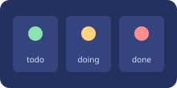

This control page logs informational messages and a warning (never console.error), loads a real asset, and contains a working button. A correct scan reports zero findings here.
| Task | Owner | State |
|---|---|---|
| Design review | Ana | open |
| Perf pass | Ravi | done |
